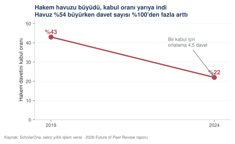
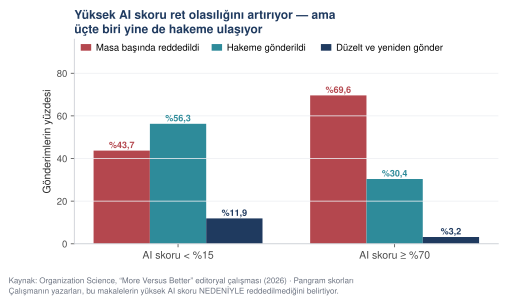
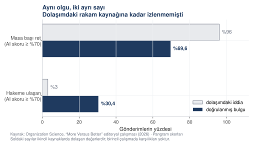
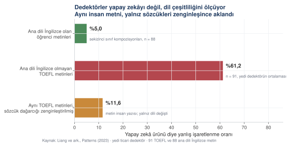
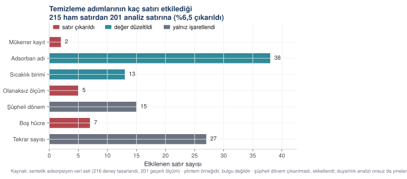
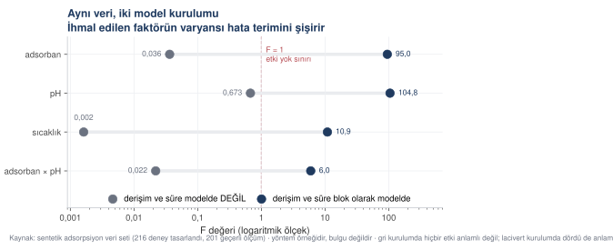
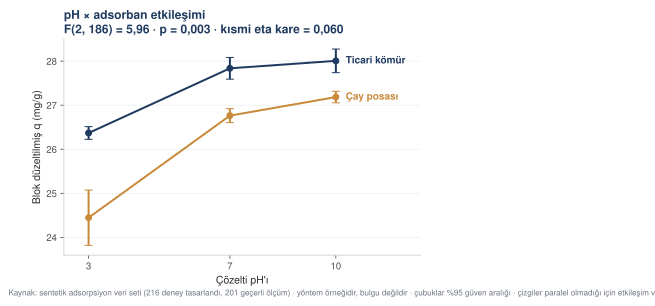
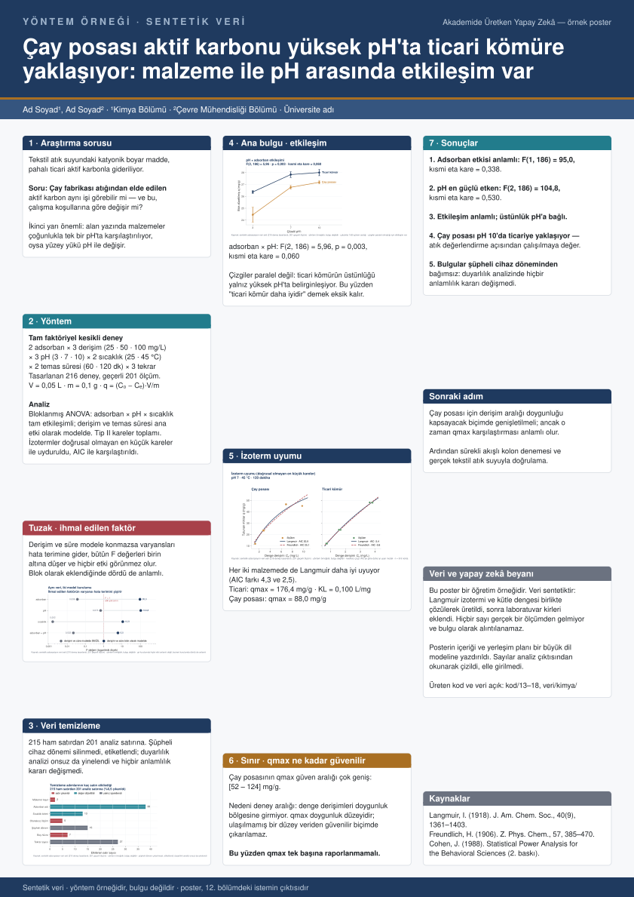

Uygulamalı atölye · Kasım 2026
Akademide üretken yapay zekâ
Araştırma sorusunun kurulmasından hakem cevabına kadar araştırma sürecinin bütün aşamaları.
- Sunan
Dr. Mehmet Sevri
- Kurum
Recep Tayyip Erdoğan Üniversitesi
Bilgisayar Mühendisliği Bölümü · AISEC Lab
- Biçim
Yedi oturum · beş uygulama çalışması
Program
Oturum düzeni
| Oturum | Süre | |
|---|---|---|
| 1 | Mevcut durum: bulgular ve beklentiler | 30 dk |
| 2 | Modelin çalışma ilkesi · etik ve beyan | 45 dk |
| 3 | İstem kurgusunun altı bileşeni | 60 dk |
| 4 | Araştırma sorusu, literatür ve veri | 75 dk |
| 5 | Analiz, şekil ve tablo üretimi | 75 dk |
| 6 | Makale, poster, proje ve hakemlik | 75 dk |
| 7 | İleri konular ve kapanış | 30 dk |
Toplam 6 saat 30 dakika. Beş uygulama çalışması (toplam 120 dakika) bu sürelerin içindedir; aralar ayrıca planlanır. Çalışmalar katılımcının kendi araştırmasıyla yürütülebilir, örnek veri setleri de sağlanmıştır.
Sunumun yöntemi
İzlenen üç yöntemsel ilke
-
İstemler yanıtlarıyla birlikte sunulur. Sunumda yer alan her istem kalıbının ürettiği yanıt da ekrana gelir; beklentiyi karşılamayan yanıtlar dâhil.
-
Her sayı kaynağına bağlıdır. Slaytlardaki istatistikler ya yayımlanmış bir çalışmaya ya da yanında verilen veri ve koda dayanır; ikinci durumda sonuç yeniden üretilebilir.
-
Sorumluluk araca devredilemez. Metne imza atan araştırmacı, metnin her cümlesini savunmayı üstlenmiş sayılır.
Materyal
Ders materyaline erişim
Atölyenin dayandığı ders materyali açık erişimdedir:
mehmetsevri.github.io/akademide-yapay-zeka
Kapsam: 15 bölüm · 53 istem kalıbı · 50 doldurulmuş örnek · 48 model yanıtı · 34 şekil · 20 çalıştırılabilir Python betiği · 5 veri seti, toplam 12.115 satır.
Sunum bu materyalin akışını izler. Atlanması istenen bölümler ızgara görünümü (O tuşu) üzerinden geçilebilir.
Ne oldu, ne bekleniyor
Üretken yapay zekânın akademik yayıncılıkta kullanımı üçüncü yılını doldurdu.
Yayımlanmış bulguların ortaya koyduğu tablo.
30 dakika
Önce üç rakam
araştırmacı bir işinde yapay zekâ aracı kullanıyor — 2024'te %57'ydi
araştırma ve yayın görevlerinde kullanıyor — 2024'te %45
yapay zekânın insanı aştığına inanıyor — 2024'te %53'tü
Wiley ExplanAItions, 2024 ve 2025 dalgaları · iki ayrı kesit. Son değer üst sınırdır: rapor kesin oran vermiyor.
Bir yılda ne değişti

Kullanım yükselirken aracın yeteneğine duyulan güven geriledi. Beklenti gerçekçileşiyor.
Gönderim hacmi iki yılda yaklaşık %40 arttı

Yapay zekâ bu eğilimi yaratmadı — küresel üretim zaten yükseliyordu. Yaptığı şey hızlandırmak.
Kullanım yaygın, beyan neredeyse yok

Tahmin edilen kullanım %9–22 arasında. Açıkça beyan edilen: %0,1. Yaklaşık kırk kat fark.
Neden
Beyan açığının nedeni korku olabilir
Dergilerin %70–83'ünün resmî bir yapay zekâ politikası var. Beyan oranı ise %0,1.
Bir açıklama şu: araştırmacılar meşru bir kullanımı beyan ettiklerinde cezalandırılmaktan çekiniyor. “Dil düzeltmesi yaptım” diyen biri, bunun ret gerekçesi sayılmasından korkuyor.
Şeffaflık isteyen bir kural, şeffaf davrananı riske atıyorsa beyan oranı düşer. Nitekim düşüyor.
Asıl darboğaz hakemlikte

Hakem havuzu %54 büyüdü ama davet sayısı iki katından fazla arttı. Bir kabul için ortalama 4,5 davet gerekiyor.
Yüksek yapay zekâ skoru ne yapıyor

Ret olasılığını artırıyor — ama belirleyici değil. Yüksek skorluların üçte biri yine de hakeme ulaşıyor.
Dolaşımdaki sayı ile doğrulanmış sayı

Bu atölye hazırlanırken üç derin araştırma raporu incelendi. İkisi çarpıtılmış rakamları aktarıyordu.
Oturum çıkarımı
Belirleyici değişken araç değil, denetim
Üç rapor da yapay zekâ ile hazırlandı. Üçü de kaynak listesi verdi.
Biri sayıları birincil kaynağa kadar izledi. İkisi izlemedi — ve ikincil kaynaklarda çarpıtılmış rakamları olduğu gibi aktardı.
Belirleyici fark, yapay zekânın kullanılıp kullanılmamasında değil, çıktının doğrulanıp doğrulanmamasındadır.
Dedektörler neyi ölçüyor?

Üç çubuk da İNSAN yazısı. Ana dili İngilizce olmayan yazarlarda yanlış işaretleme %61,2.
Türkiye'den yayın yapan araştırmacılar açısından
Bulgunun Türkçe konuşan yazarlar için anlamı
Dedektörlerin çoğu şaşırtıcılık ölçer: bir sonraki sözcüğün ne kadar tahmin edilebilir olduğunu. Dil modelleri en olası sözcüğü seçtiği için düşük şaşırtıcılıkla yazar.
Ama ana dili İngilizce olmayan bir araştırmacı da, hata yapmamak için güvenli ve kalıplaşmış bir dil kullandığında düşük şaşırtıcılıkla yazar.
Araç bu iki durumu ayırt edememektedir. Ölçülen nitelik yapay zekâ kullanımı değil, dilsel çeşitliliktir.
Türkçe ana dili olan bir araştırmacının İngilizce makalesi, tam da yanlış işaretlemeye en yatkın profile uyuyor.
Ne bekleniyor
Ön eleme sertleşecek
Gönderim hacmi hakem kapasitesinden hızlı büyüdükçe daha az makale hakeme ulaşacak. Bu, politikadan bağımsız bir kapasite aritmetiği.
Süreç kanıtı metinden önemli olacak
Metin artık kime ait olduğunu göstermiyor. Ayırt edici olan: ham veri, kod deposu, protokol ön kaydı, sürüm geçmişi.
Beyan rejimi normalleşebilir
Beyan edenin cezalandırılmadığı bir düzen kurulmazsa %0,1 yükselmez. Yayıncı rehberlerindeki “kullanım tek başına ret nedeni değildir” ilkesi bu yönde.
Dedektörlerin rolü belirsiz
Mevcut araçların dil kökenine göre yanıldığı ölçülmüş bir olgu. Alana özgü modeller daha iyi ama yaygın değil.
Model nasıl çalışır, etik nerede durur
Aracın çalışma ilkesi, kullanım sınırlarının belirlenmesinin ön koşuludur.
Kurumsal düzenlemeler bu oturumda ele alınır.
45 dakika
Nasıl çalışır
Tek cümlede: sonraki sözcüğü tahmin eder
Büyük dil modeli bir bilgi tabanı değildir. Devasa bir metin yığınında, bir sözcüğün ardından hangi sözcüğün gelme olasılığının yüksek olduğunu öğrenmiş bir sistemdir.
Bunu bilmek üç şeyi açıklar:
- Neden akıcı yazar. Akıcılık zaten optimize ettiği şey.
- Neden kaynak uydurur. “Yazar (yıl). Başlık. Dergi.” kalıbı çok tanıdık; o kalıbı doldurmak, doğru olanı bulmaktan kolay.
- Neden kendinden emin görünür. Emin olmadığını bildiren bir mekanizması yok; en olası sözcüğü seçmeye devam eder.
Neyi iyi yapar, neyi yapamaz
Çıktısı denetlenemeyen işler
- Kaynak künyesi üretmek — uydurur
- Sayı hesaplamak — metin üzerinden tahmin eder
- Güncel bilgi — eğitim verisiyle sınırlı
- Sizin alanınızdaki ince tartışma — yüzeysel kalır
- Hangi yöntemin doğru olduğuna karar vermek — sizin işiniz
Çıktısı denetlenebilen işler
- Metni yeniden yapılandırmak — dağınık notu akışa sokmak
- Dil ve üslup — özellikle ikinci dilde yazarken
- Kod yazmak ve hata ayıklamak — çıktısı sınanabilir
- Eleştirel okuma — “bu paragrafın zayıf yeri nerede”
- Yapılandırılmış çıkarım — metinden tabloya
Ayrım tek ölçütle: çıktısını denetleyebiliyor musunuz? Denetleyebildiğiniz işi verin, denetleyemediğinizi vermeyin.
Somut örnek
Kurs hazırlanırken karşılaşılan uydurma künyeler
Kursun beşinci bölümü için modelden literatür künyeleri istendi. Gelen listede var olmayan makaleler vardı: gerçek yazar adları, gerçekçi dergi adları, biçimi kusursuz DOI numaraları.
Künyelerin tamamı doğrulanabilir nitelikteydi; doğrulama yapıldığında hiçbiri karşılık bulmadı.
Söz konusu künyeler ders materyalinde silinmeden bırakılmıştır. Buradaki temel bulgu şudur: uydurma bir kaynak, biçimsel olarak uydurma izlenimi vermez.
Kurumsal kural
TÜBİTAK iki rol için iki ayrı kural koyuyor
Eylül 2025 tarihli ARDEB rehberi:
Başvuru sahibi için — koşullu serbest, beyan zorunlu. İzin verilen: literatür özetleme, dil iyileştirme, kodlama yardımı, fikir geliştirme, görselleştirme önerisi. "Basit dilbilgisi denetiminin ötesine geçen" her kullanım beyan edilmeli: aracın adı, sürümü, hangi aşamada kullanıldığı.
Değerlendirici için — tümüyle yasak. Hakem, panelist, danışman ve izleyiciler değerlendirme göreviyle ilgili hiçbir amaçla kullanamaz: metni özetlemek, güçlü-zayıf yön belirlemek, rapor taslağı üretmek, hatta konuyla ilgili e-posta yazmak dâhil.
Neden
Değerlendirici yasağının gerekçesi gizlilik
Proje önerisi yayımlanmamış fikir ve kişisel veri taşır. Bunu dış bir hizmete yüklemek iki yükümlülüğü birden ihlal eder:
- Gizlilik taahhüdü
- KVKK — özellikle yurt dışı sunuculara aktarım (madde 9)
Aynı mantık hakemliğini yaptığınız makale için de geçerlidir.
Ayrım basit: kendi metniniz kendi sorumluluğunuzdadır, başkasının metni size emanettir.
Beyan nasıl yazılır
Neyi yazacaksınız
Aracın adı ve sürümü · kullanıldığı aşama (literatür özeti, kod üretimi, dil denetimi) · kullanımın niteliği (ilk taslak, iyileştirme).
Nereye yazacaksınız
Dergilerde çoğunlukla yöntem ya da teşekkür bölümü. TÜBİTAK'ta başvuru sisteminde bunun için ayrılmış özel bölüm var.
Neyi yazmayacaksınız
Yapay zekâyı yazar olarak gösteremezsiniz. Beş büyük yayıncı bu konuda aynı şeyi söylüyor: hesap verebilen bir muhatap gerekir.
Dikkat
Araca hiçbir koşulda aktarılmaması gereken veriler
- Kimliksizleştirilmemiş katılımcı verisi. Yaş, bölüm ve açık uçlu yanıt bir aradaysa kişi tanınabilir hâle gelir.
- Hakemliğini yaptığınız metin. Başkasının yayımlanmamış işi.
- Yayımlanmamış ham veriniz — özellikle patent başvurusu düşünüyorsanız.
- Üçüncü kişilere ait ticari bilgi.
Kurumunuzun kurumsal aboneliği varsa veri işleme koşulları bireysel abonelikten farklı olabilir. Hangi koşulla kullandığınızı bilin.
Uygulama · 15 dakika
Kendi beyan cümlenizi yazın
Üzerinde çalıştığınız bir makaleyi ya da proje önerisini düşünün. Yapay zekâyı hangi aşamalarda kullandınız ya da kullanmayı düşünüyorsunuz?
Her kullanım için üç şeyi yazın: aracın adı ve sürümü, hangi aşamada, ne niteliğinde.
Bunları tek bir paragrafa dönüştürün. Hedef derginizin yazar rehberinde beyan için ayrılmış yeri bulun.
Yanınızdakiyle değişin. Onun beyanını okuyan bir editör “burada eksik bir şey var” der mi?
Çıktı: hedef derginize gönderebileceğiniz, iki-üç cümlelik bir beyan paragrafı.
İstem yazmanın altı parçası
İstem kurgusunun bileşenleri ve bunların çıktı üzerindeki etkisi.
Aynı soru, iki farklı istem, birbirinden ayrışan iki sonuç.
60 dakika
Aynı iş, iki istem
Zayıf
Anket maddelerimi değerlendir.
Model ne yapar: genel geçer bir ölçek yazım dersi verir. Sizin maddelerinizi görmez, hangi ölçütle baktığını söylemez, denetlenemez bir metin üretir.
Güçlü
ROL · ölçek geliştirme deneyimi olan bir ölçme uzmanı
KAYNAK · ekteki 21 madde, 5'li Likert
GÖREV · her maddeyi dört ölçütle denetle
BİÇİM · madde no · sorun · gerekçe · düzeltilmiş hâl
SINIR · yeni madde önerme; sorunsuzu “sorunsuz” yaz
DENETİM · kaç maddede sorun buldun, hangi ölçütte
Model ne yapar: denetlenebilir bir tablo üretir.
Fark uzunlukta değil. Fark, neyin denetleneceğinin önceden söylenmesinde.
Kalıp
İyi istemin altı parçası
| Parça | Ne yapar | |
|---|---|---|
| 1 | ROL | Hangi uzmanlıkla bakacağını söyler |
| 2 | KAYNAK | Neye dayanacağını verir — ek dosya, veri, bağlam |
| 3 | GÖREV | Ne yapacağını, kaç adımda yapacağını |
| 4 | BİÇİM | Çıktının yapısı: tablo mu, liste mi, hangi alanlar |
| 5 | SINIR | Ne yapmayacağını — en çok atlanan, en çok işe yarayan |
| 6 | DENETİM | Kendi çıktısını nasıl sayacağını |
Altısı da her zaman gerekmez. Ama sınır ve denetim olmadan yazılan istem, denetlenemeyen çıktı üretir.
En çok atlanan parça
Sınır: modelin neyi yapmayacağının belirtilmesi
Model, boşluk gördüğü yeri doldurur. Doldurmasını istemediğiniz yeri söylemezseniz doldurur.
Ders materyalinde kullanılan sınır ifadeleri:
- “Veride olmayan bir değişkene dayanan analiz önerme.”
- “Kaynak uydurma. Künye vermeye çalışma; ‘şu tür çalışmalar var, şöyle arayın’ de.”
- “Aykırı değerleri kendiliğinden silme; yalnız olanaksız değerleri işaretle.”
- “İzoterm modellerini doğrusallaştırarak uydurmayı önerme.”
- “Nazik olma. Gerçek bir panelde kimse nazik değildir.”
Sonuncusu da bir sınırdır: nazik davranması istenmediğinde model daha sert ve daha kullanışlı eleştiri üretir.
Model yanıtı · kod/15_analiz_adsorpsiyon.py
Tek bir sınır cümlesinin sonuç üzerindeki etkisi
Doğrusallaştırma neden önerilmedi
(a) Dönüştürülmüş ölçekteki R² karşılaştırılamaz.
Adsorban yöntem Langmuir R² Freundlich R² seçim
Çay posası doğrusal olmayan 0,9575 0,9276 Langmuir
doğrusallaştırılmış 0,9552 0,9087 Langmuir
Ticari doğrusal olmayan 0,9980 0,9974 Langmuir
doğrusallaştırılmış 0,9980 0,9970 Langmuir
Özgün ölçeğe getirildiğinde iki yöntem de Langmuir'i seçiyor.
Dönüştürülmüş ölçekteki R² ile bakılsaydı Freundlich kazanıyordu —
yani sonucu değiştiren şey model değil, R²'nin hangi ölçekte
hesaplandığıydı.
İstemde “doğrusallaştırarak uydurmayı önerme” satırı olmasaydı, model literatürde yaygın olanı önerecekti ve sonuç ters çıkacaktı.
Altıncı parça
Denetim: modele kendi işini saydırmak
İstemin sonuna eklenen tek bir paragraf, çıktının denetlenebilirliğini değiştirir:
DENETİM Tablonun altına şunları yaz: koleksiyonda kaç kayıt vardı, kaçında tam metin bulundu, hangi kayıtlarda hangi alanlar boş kaldı.
Bu, modelin kendi eksiklerini size bildirmesini sağlar. Olmazsa eksikleri siz arayacaksınız — ve çoğu zaman aramayacaksınız.
Diğer örnekler: “Dört ölçütün ağırlıklı toplamını hesapla ve aritmetiğini göster.” · “Kaç maddede sorun buldun, hangi ölçütte?” · “Her satırın sonunda bilginin alındığı sayfa numarasını yaz.”
İstem · Eğitim bilimleri · ölçek geliştirme
Altı bileşenin bir arada kullanımı
ROL Ölçek geliştirme ve uyarlama deneyimi olan bir ölçme ve değerlendirme uzmanısın. KAYNAK Ekteki dosyada 21 madde var. Beşli Likert (1 = kesinlikle katılmıyorum, 5 = kesinlikle katılıyorum). Ölçeğin amacı: öğretmenlerin derste yapay zekâ araçlarını kullanma eğilimini ölçmek. Hedef kitle: ortaöğretim öğretmenleri. GÖREV Her maddeyi dört ölçütle denetle: 1. Çift ifade — tek maddede iki şey birden soruluyor mu? 2. Yönlendirme — madde belirli bir yanıta itiyor mu? 3. Belirsizlik — "bazen", "genellikle" gibi ölçülemeyen nitelik 4. Olumsuz kurulum — ters kodlanacak mı, gerekli mi? BİÇİM Tablo: madde no · maddenin kendisi · saptanan sorun (yoksa "sorunsuz") · hangi ölçüt · gerekçe (tek cümle) · düzeltilmiş hâl SINIR — Yeni madde önerme. Elimdeki 21 maddeyle çalışıyorum. — Sorunsuz maddeyi düzeltmeye çalışma; "sorunsuz" yaz ve geç. — Maddenin anlamını değiştirme; yalnız ifadeyi düzelt. — Ölçeğin kuramsal çerçevesi hakkında yorum yapma; o ayrı bir iş. DENETİM Tablonun sonunda: kaç maddede sorun buldun, hangi ölçütte kaç tane, ve ters kodlanması gereken maddelerin numaraları.
İstemin ürettiği yanıt bir sonraki slayttadır.
Model yanıtı · Claude Opus · kurs bölüm 3
Önceki slayttaki istemin yanıtı — ilk iki bulgu
Madde 3: "Yapay zekâ araçları derslerimi zenginleştiriyor ve
zamandan tasarruf sağlıyor."
Sorun : Çift ifade
Ölçüt : 1
Gerekçe : Zenginleştirme ile zaman tasarrufu farklı şeylerdir;
birine katılıp ötekine katılmayan yanıtlayıcı ne
işaretleyeceğini bilemez.
Düzeltme: "Yapay zekâ araçları derslerimi zenginleştiriyor."
(Zaman tasarrufu ayrı madde olmalı.)
Madde 7: "Yapay zekâ araçlarını kullanmak öğretmenlik mesleğinin
geleceği için kaçınılmazdır."
Sorun : Yönlendirme
Ölçüt : 2
Gerekçe : "Kaçınılmaz" sözcüğü maddeyi bir olguymuş gibi sunuyor;
katılmamak için yanıtlayıcının önermeyi reddetmesi gerek.
Düzeltme: "Yapay zekâ araçları öğretmenlik mesleğinin geleceğinde
yer alacaktır."
Her bulguda dört alan var: sorun türü, hangi ölçüde ihlal edildiği, gerekçe ve düzeltme önerisi. Bu yapı istemde istendiği için geliyor.
Model yanıtı · Claude Opus · kurs bölüm 3
Yanıtın devamı — üçüncü bulgu ve denetim bölümü
Madde 12: "Bazen yapay zekâ araçlarından yararlanırım."
Sorun : Belirsizlik
Ölçüt : 3
Gerekçe : "Bazen" kişiden kişiye değişir; sıklık maddesi Likert
ile değil, ayrı bir sıklık ölçeğiyle sorulmalı.
Düzeltme: "Ders hazırlığımda yapay zekâ araçlarından yararlanırım."
DENETİM
Sorunlu madde : 9 / 21
Çift ifade : 3 madde (3, 8, 19)
Yönlendirme : 2 madde (7, 14)
Belirsizlik : 3 madde (12, 16, 20)
Olumsuz kurulum : 1 madde (11)
Ters kodlanacaklar : 5, 11, 17
DENETİM bölümü istemde istendiği için var. İstenmeseydi model dokuz sorunu bulurdu ama saymazdı — ve kaçını atladığı bilinemezdi.
İleri
En belirleyici bileşen: ek dosya
Modelin bilmediğini isteme koymazsanız, model onu uydurur ya da atlar. Bilmediği şey çoğunlukla bir belgenin içindedir: yazar rehberi, değerlendirme formu, kurum yönergesi, veri sözlüğü.
Kursta aynı istem iki kez koşuldu; ikincisinde TÜBİTAK 1001 panel formu ek olarak verildi. Form olmadan üretilen değerlendirme, formda açıkça yazan ve puan kaybettiren üç ölçütü atladı. Bu karşılaştırma altıncı oturumda ayrıntılı ele alınacak.
Çıkarılacak kural ikisi için de aynı:
Belge elinizdeyse eke koyun. Özetlemeyin, olduğu gibi verin.
Özet, modelin neyi önemli saydığına bağlıdır; belgenin kendisi bu seçimi ortadan kaldırır.
Sınırlama
Eke verinin kendisi değil profili konur
Akla gelen ilk çözüm veri dosyasını eklemektir. Üç nedenle kötüdür:
Gizlilik. Ham satırlar kişisel veri taşıyabilir.
Jeton. 5.820 satırlık dosya bağlam penceresini doldurur, asıl soruya yer kalmaz.
Doğruluk. Model 5.820 satırı okuyup ortalama hesaplamaz. Hesaplamaya çalışırsa yanılır — ve yanıldığını söylemez.
Doğru çözüm veri profili: her değişkenin ölçüm düzeyi, eksik
oranı, dağılım ölçüleri, normallik sınaması. Satır düzeyinde hiçbir
bilgi taşımaz. Kursta bunu üreten betik var: kod/19_veri_profili.py
Model yanıtı · kod/19_veri_profili.py
Modele verilecek şey: profil
VERİ PROFİLİ — Gazi Üniversitesi ders değerlendirme verisi
==============================================================
Gözlem sayısı : 5.820
Değişken sayısı: 36
Tam dolu satır : 5.820
instr
ölçüm düzeyi : sıralı ya da nominal (3 tamsayı düzeyi: [1, 2, 3] —
hangisi olduğu veriden anlaşılmaz, siz söylemelisiniz)
eksik : 0 (%0,0)
aralık : 1,00 – 3,00
Q1
ölçüm düzeyi : sıralı (Likert) (1–5 arası 5 basamağın hepsi kullanılmış)
eksik : 0 (%0,0)
ortalama / SS: 2,930 / 1,341
Shapiro-Wilk : W = 0,8707, p = 0,0000
çarpıklık : 0,085 · basıklık: -1,170
dağılım notu : sapma anlamlı ama çarpıklık ve basıklık yaygın
eşiklerin içinde; büyük örneklemde beklenen durum
Betik ölçüm düzeyini tahmin eder, karar vermez: 1, 2, 3 bir ölçek de olabilir, kimlik numarası da. Ayrımı siz yaparsınız.
Uygulama · 25 dakika
Kendi isteminizi altı parçayla yazın
Şu an elinizde olan gerçek bir işi seçin: denetlenecek bir metin, çıkarılacak bir veri, kurulacak bir analiz planı.
Altı parçayı sırayla yazın. Sınır ve denetim parçalarına en az iki madde koyun — en çok atlanan ve en çok işe yarayan ikisi bunlar.
İstemi koşturun. Çıktıyı okumadan önce şunu yazın: “Beklediğim çıktı şöyle olmalı.”
Çıktıyı okuyun. Beklentinizden saptığı yerleri işaretleyin. Her sapma için sorun: bu, istemde eksik bıraktığım bir şeyden mi kaynaklanıyor?
İstemi bir kez düzeltip yeniden koşturun. İkinci çıktı genellikle belirgin biçimde daha iyidir.
Çıktı: kendi işinize göre yazılmış, iki tur iyileştirilmiş bir istem. Bunu saklayın — bir sonraki benzer işte yeniden kullanacaksınız.
Soru, literatür, veri
Araştırma tasarımının ilk aşaması. Bu aşamadaki kurgu hataları sonraki aşamalarda giderilemez.
75 dakika
Başlangıç
Konu ile soru arasındaki fark
Çoğu araştırma fikri, ilk hâliyle bir konudur, soru değil.
| Konu | Soru |
|---|---|
| Çay posasından aktif karbon | Çay posası aktif karbonunun giderim verimi, çalışma koşullarına göre ticari kömürden ne kadar farklıdır? |
| Öğretmenlerde yapay zekâ kullanımı | Ders hazırlığında yapay zekâ kullanımı, branşa ve kıdeme göre farklılaşıyor mu? |
| Osmanlı salnamelerinde eğitim | 1869 Nizamnâmesi sonrasında rüşdiye yayılımı vilayetler arasında nasıl farklılaştı? |
Soruda ölçülecek bir şey vardır ve yanıtı önceden bilinmez.
Araç
PICOC: soruyu parçalarına ayırmak
Soruyu beş parçaya bölen bir kontrol listesi. Her parçayı adlandıramıyorsanız soru henüz hazır değildir.
| Açılım | Ne sorar | |
|---|---|---|
| P | Population | Kim, ne, hangi birim? |
| I | Intervention | Hangi uygulama, yöntem, koşul? |
| C | Comparison | Neyle karşılaştırılıyor? |
| O | Outcome | Ne ölçülecek? |
| C | Context | Hangi ortam, dönem, sınır? |
En çok atlanan: Comparison. Karşılaştırması olmayan bir bulgu yorumlanamaz — “yüksek çıktı” neye göre yüksek?
Aynı fikir, PICOC'suz ve PICOC'lu
Ayrıştırılmamış
"Öğrencilerin derse devamı ile başarıları arasındaki ilişkiyi inceleyeceğim."
Hangi öğrenciler? Devam nasıl ölçülüyor? Başarı neyle? Neyle karşılaştırılacak? Hangi dersler, hangi dönem?
PICOC ile
P · bir devlet üniversitesinde lisans öğrencileri, 13 ders
I · devam düzeyi (0–4 arası beyan)
C · düşük devam düzeyindeki öğrenciler
O · ders değerlendirme puanı (12 maddenin ortalaması)
C · 2013 verisi, tek üniversite, kesitsel
Artık ölçüm belli: hangi değişken, hangi ölçek, hangi karşılaştırma.
PICOC bir bürokrasi değil; analiz planını da belirler. O'nun ölçüm düzeyi hangi testi kullanacağınızı söyler.
Literatür
Modelin literatürde yapabildiği ve yapamadığı
Yapamaz: künye üretmek. Deneyin — “bu konuda beş makale say” dediğinizde gelen listedeki künyelerin bir bölümü var olmaz.
Yapar: arama dizgisi kurmak. Kavram kümelerini çıkarmak, eşanlamlıları toplamak, veri tabanının sözdizimine çevirmek.
İş bölümü şöyle olmalı:
- Model arama dizgisini kurar
- Siz dizgiyi veri tabanında koşturup kayıtları indirirsiniz
- Model indirdiğiniz kayıtları eler, sınıflandırır, çıkarım yapar
- Siz örneklemle denetlersiniz
Model hiçbir aşamada kaynak üretmez; sizin getirdiğiniz kaynaklar üzerinde çalışır.
İstem · Eğitim bilimleri
Arama dizgisi kurma istemi
ROL Sistematik derleme metodolojisi bilen bir bilgi uzmanısın. ARAŞTIRMA SORUSU Ortaöğretim öğretmenlerinin ders hazırlığında üretken yapay zekâ araçlarını kullanımı, branşa ve mesleki kıdeme göre farklılaşıyor mu? GÖREV Bu soru için arama dizgileri kur. ÖNCE KAVRAM KÜMELERİ Soruyu bağımsız kavram kümelerine ayır. Her küme için: — Türkçe ve İngilizce terimler — Eşanlamlılar ve alan yazındaki yakın terimler — Varsa denetimli sözcük dağarcığı karşılığı (ERIC Thesaurus) SONRA VERİ TABANI DİZGİLERİ Şu veri tabanları için ayrı ayrı, kopyala-yapıştır hazır dizgi yaz: — Web of Science (TS= alan etiketiyle) — Scopus (TITLE-ABS-KEY ile) — ERIC (denetimli sözcüklerle) — ULAKBİM TR Dizin (Türkçe terimlerle) HER DİZGİ İÇİN — Dizginin kendisi, tek blok hâlinde — Hangi alan sınırlaması kullanıldı ve neden — Yıl aralığı önerisi ve gerekçesi — Beklenen kayıt sayısı için kaba bir tahmin aralığı SINIRLAR — Kaynak künyesi verme. Hiçbir makale adı, yazar ya da DOI yazma. — Dizgiyi gereğinden fazla daraltma; önce geniş at, sonra eleriz. — Var olmayan alan etiketi ya da operatör uydurma; emin değilsen "bu veri tabanında bu etiketi doğrulayın" diye not düş. DENETİM Her küme kaç terim içeriyor, hangi kümede Türkçe karşılık bulmakta zorlandın?
Son satır önemli: Türkçe alan yazında karşılığı olmayan kavramlar, taramanızın en zayıf halkasıdır.
Ölçek
Kırk PDF'ten tabloya
Tek PDF'ten veri çıkarmak kolay. Asıl iş, kırk PDF'i tutarlı biçimde çıkarmak.
İki kural bu işi kurtarır:
Alanları önceden sabitleyin. Her makaleden hangi alanların çıkarılacağı baştan yazılır; model alan ekleyip çıkaramaz. Yoksa her PDF'ten farklı şeyler gelir ve tablo birleşmez.
Bulunamayanı işaretletin. “Bu alan metinde yok” ile "bu alanı atladım" farklı şeylerdir. İkincisini göremezsiniz; birincisini sayabilirsiniz.
SINIR — Bir alan metinde bulunamıyorsa “belirtilmemiş” yaz. Özetten ya da genel bilginden doldurmaya ÇALIŞMA.
DENETİM — Kaç PDF işlendi, kaçında hangi alan boş kaldı, hangi dosyalarda metin okunamadı?
Uygulama · 25 dakika
Kendi sorunuz için arama dizgisi
Kendi araştırma sorunuzu PICOC ile beş parçaya ayırın. Ayıramadığınız parça varsa sorunuz henüz hazır değil — önce onu düzeltin.
Arama dizgisi istemini kendi sorunuzla doldurup koşturun.
Elde edilen dizgiyi bir veri tabanında çalıştırın. Kaç kayıt geldi? Beklediğinizden çok mu az mı?
Çok geldiyse hangi kümeyi daraltacağınızı, az geldiyse hangi eşanlamlıyı eklemek gerektiğini modele sorun.
İlk 20 kaydı gözden geçirin. Konuyla ilgisiz olanların ortak özelliği ne? O özelliği dizgiye dışlama olarak ekleyin.
Çıktı: veri tabanında koşmuş, kayıt sayısı makul bir arama dizgisi ve onu nasıl daralttığınızın kaydı.
Veri
Temizleme bir karar zinciridir
Veri temizleme teknik bir iş gibi görünür; aslında bir karar zinciridir. Her karar bulguyu etkiler.
Bu yüzden tek bir kural her şeyi belirler:
Hiçbir satır sessizce silinmez. Silinen her şeyin sayısı ve gerekçesi günlüğe yazılır.
Modele temizleme yaptırırken bu kuralı isteme koyun. Koymazsanız model “veriyi iyileştirir” ve neyi değiştirdiğini söylemez.
Model yanıtı · kod/14_adsorpsiyon_temizle.py
İstemin ürettiği betiğin çıktısı — karar günlüğü
ADSORPSİYON VERİSİ — TEMİZLEME KARAR GÜNLÜĞÜ
============================================================
Ham satır sayısı : 215
Temiz satır sayısı : 201
Çıkarılan : 14 (%6.5)
3. Sıcaklık birimi
Karar : Fahrenheit → Celsius çevrildi
Gerekçe : Tasarımda yalnız 25 ve 45 °C var; 50 °C üstü değerler
birim karışıklığı. 77 °F = 25 °C, 113 °F = 45 °C.
Etkilenen satır: 13
Günlüğün tamamı yedi adım içeriyor; burada üçü gösteriliyor. Her adımda karar, gerekçe ve etkilenen satır sayısı ayrı ayrı yazılı.
Model yanıtı · kod/14_adsorpsiyon_temizle.py
Karar günlüğü — çıkarma ile işaretleme arasındaki fark
4. Olanaksız ölçüm
Karar : Satır çıkarıldı
Gerekçe : Denge derişimi başlangıçtan büyük ya da eşit.
Adsorpsiyon derişimi düşürür; bu fiziksel olarak olanaksız.
Etkilenen satır: 5
5. Şüpheli dönem
Karar : Çıkarılmadı, işaretlendi
Gerekçe : 12-18 Mart arası cihaz bakım kaydı var. Satırlar
'supheli_donem' sütunuyla etiketlendi; duyarlılık analizi
bunları hariç tutarak yineleniyor.
Etkilenen satır: 15
Dördüncü adım satırı çıkardı, beşinci adım yalnızca etiketledi. Şüpheli veriye yapılacak şey silmek değil, işaretlemek. Silinen veriyle duyarlılık analizi yapılamaz.
Hangi adım kaç satırı etkiledi

Kırmızı: satır çıkarıldı. Turkuaz: değer düzeltildi. Gri: yalnız işaretlendi. Üç kategori üç farklı karar.
Alan bilgisi
Modelin erişemediği bilgi türü
Anket verisindeki kirler biçimseldir: yazım tutarsızlığı, boşluk, aralık dışı değer. Model bunları kendi bulur.
Laboratuvar verisindeki bazı kirler ise fiziksel olarak olanaksızdır: denge derişiminin başlangıçtan büyük olması gibi.
Bu ayrımı yalnız alan bilgisi söyler. İsteme şunu yazmazsanız:
“Denge derişimi başlangıçtan büyük olamaz, çünkü adsorpsiyon derişimi düşürür.”
model o satırları olağan aykırı değer sanıp bırakır — ya da daha kötüsü, “düzeltmeye” çalışır.
Etik
Kimliksizleştirme: ad silmek yetmez
Adı silmek kimliksizleştirme değildir. Tehlike birleşimdedir:
42 yaşında, Diş Hekimliği Fakültesi'nde, doçent, kadın
Bu dört bilgi tek başına zararsız; birlikte tek bir kişiyi gösterir.
Pratik ölçüt k-anonimlik: her nitelik birleşimi en az k kişide görünmeli. Küçük örneklemde k = 5 makul bir eşik.
Çözüm genellikle toplulaştırmaktır: yaşı aralığa çevirin (40–49), fakülteyi alana (sağlık bilimleri), unvanı iki düzeye. Bilgi kaybı olur — ama yayımlanabilir veri elde edersiniz.
Raporlama
Sentetik veri kullanımının beyanı
Kursta üç veri seti sentetik: anket atölyesi, açık uçlu yanıtlar, adsorpsiyon deneyi.
Her birinin başında, dosyada ve sayfada aynı uyarı var:
Bu veri gerçek bir çalışmadan gelmiyor. Yöntem göstermek için üretildi. Hiçbir sayı bulgu olarak alıntılanamaz.
Neden sentetik: temizlenmemiş ham deney verisi kamuya açık olarak bulunmaz. Yayımlanan veri setleri zaten temizlenmiştir — oysa öğretilecek şey tam olarak temizleme adımıdır.
Sentetik verinin bir avantajı var: doğru cevabı biliyorsunuz. Birazdan bunun ne işe yaradığını göreceğiz.
Analiz, şekil, tablo
Testin araştırma sorusuna göre seçilmesi ve olağandışı yüksek doğruluk değerlerinin yorumlanması.
75 dakika
Sıra
Analizi yapmadan önce planı yazdırın
Analizi yapıp sonra “hangi test uygundu” diye sormak, sonuca bakarak test seçmek demektir. Buna p-hacking denir ve çoğu zaman kötü niyetle değil, sırayı karıştırmaktan doğar.
Plan istemi şunları ister:
- Hangi test — adıyla
- Neden bu test — soru türü, ölçek düzeyi, grup sayısı
- Hangi varsayımlar — her biri nasıl denetlenecek
- Varsayım sağlanmazsa — alternatif test
- Hangi etki büyüklüğü — adı ve yorum eşikleri
- Rapor cümlesi şablonu — yerleri boş bırakılmış
Planı yazıp bir kenara koymak, sonuçlara göre yön değiştirmenizi engeller.
Hangi analiz hangi soruya

Soru türü ve ölçüm düzeyi bilinirse test büyük ölçüde belirlenir. Geri kalanı varsayım denetimi.
Model yanıtı · kod/15_analiz_adsorpsiyon.py
İlk model kurulumunun yetersizliğinin nedeni
ADIM 0 — İLK KURULUM ve NEDEN İŞE YARAMADIĞI -------------------------------------------------------------- Analizi ilk kurduğumuzda yalnız ilgi konusu üç faktörü modele koyduk: adsorban, pH, sıcaklık. Başlangıç derişimi ile temas süresini dışarıda bıraktık. Kaynak KT sd F p η²p adsorban 6,9 1 0,03 0,855 0,000 pH 280,6 2 0,68 0,509 0,007 sicaklik_C 0,3 1 0,00 0,969 0,000 adsorban × pH 8,8 2 0,02 0,979 0,000 Hiçbir etki anlamlı değil, bütün etki büyüklükleri sıfıra yakın. Oysa çay posası ile ticari kömürün farklı davrandığını betimsel tabloda zaten görüyorduk.
Bu çıktı ders materyalinde Adım 0 olarak korunmuştur; sonradan kurgulanmış bir örnek değildir.
Aynı veri, iki model kurulumu

Derişim ve süre modele konmadığında bütün F değerleri birin altında. Blok olarak konduğunda dördü de anlamlı.
Çıkarım
F oranının paydası açıklanamayan değişkenliktir
q değeri başlangıç derişimine çok güçlü bağlı: 25 mg/L'de ~11 mg/g,
100 mg/L'de ~45 mg/g.
Bu farkı modele koymazsanız o varyans hata sayılır ve F oranının paydasını şişirir. Payda şişince bütün F değerleri birin altına düşer.
Deney tasarımı dilinde çözümü bloklama: kontrol edilen ama ilgi konusu olmayan faktörler modele ana etki olarak girer, etkileşimleri sorulmaz.
Modelden çıkarmak basitleştirmez — varyansı görünmez bir yere taşır.
Etkileşim anlamlıysa ana etki tek başına yorumlanmaz

Çizgiler paralel değil. “Ticari kömür daha iyidir” demek eksik; üstünlüğü pH'a bağlı.
Model yanıtı · kod/15_analiz_adsorpsiyon.py
Tahmin edilen parametrelerin gerçek değerlere uzaklığı
(c) Tahminler gerçek değerlere ne kadar yakın?
Bu veri sentetik olduğu için üretim modelinin gerçek
parametrelerini biliyoruz. Gerçek bir çalışmada bu denetim
yapılamaz.
Adsorban Parametre gerçek tahmin %95 güven aralığı kapsıyor mu
Çay posası qmax (mg/g) 148,0 88,0 [52,2 – 123,7] HAYIR
KL (L/mg) 0,0671 0,1364 [0,0377 – 0,2352] evet
Ticari qmax (mg/g) 176,0 176,4 [137,8 – 215,0] evet
KL (L/mg) 0,1000 0,0997 [0,0712 – 0,1282] evet
Nedeni yöntem değil, deney aralığı: çay posasının denge
derişimleri 1,3-9,8 mg/L arasında kalıyor. En yüksek derişimde
bile kapasitenin ancak %57 kadarı doluyor; izoterm doygunluk
bölgesine girmiyor.
qmax bir doygunluk düzeyidir; doygunluğa ulaşılmamış veriden güvenilir biçimde çıkarılamaz. Geniş güven aralığı bu uyarıyı zaten veriyor — nokta tahmini tek başına raporlanırsa uyarı kaybolur.
Makine öğrenmesi
%99,9 doğruluk bir başarı göstergesi değildir
Kursun web güvenliği örneğinde ilk model F1 = 0,9992 verdi.
Bu iyi haber değil, şüphe nedenidir. Gerçek bir sınıflandırma probleminde bu başarım beklenmez.
Yapılan inceleme şunu gösterdi: beş özellik, sınıf etiketine göre sabit değer alıyordu. Model problemi çözmüyor, cevabı okuyordu.
Bu, veri sızıntısının tanımı: eğitim verisine, tahmin anında elde olmayacak bir bilginin karışması.
Sızıntı nasıl bulundu

Tek bir sütunu atmak yetmedi — sistematik tarama beş sızdıran özellik buldu.
Sonuç
Savunulabilir ölçüm, yüksek ölçümden önce gelir
| Kurulum | F1 | Durum |
|---|---|---|
| Saf model, 43 özellik | 0,9992 | sızıntılı — cevabı okuyor |
| Bir sütun atıldı | 0,9984 | hâlâ sızıntılı |
| Beş sütun atıldı | 0,9873 | daha iyi ama gerçekçi değil |
| Yerleşime uygun, 11 sözcüksel özellik | 0,9765 | savunulabilir |
Son satır, modelin yerleşim koşullarında yapabileceği işi gösterir. Çapraz doğrulamada 0,9702 ± 0,0062.
Bir hakem birinci satırı görse sorardı: “Bu başarım nasıl mümkün?” Dördüncü satırı sormaz.
Şekil ve tablo
Yayın kalitesinde şekil: üç ilke
Mürekkep oranı. Her çizgi bir bilgi taşımalı. Süs çizgisi, gereksiz çerçeve, üç boyut efekti silinir.
Doğrudan etiketleme. Mümkünse açıklama kutusu yerine etiketi verinin yanına yazın. Okur gözüyle ileri geri gitmesin.
Izgara yalnız değer ekseninde. Kategori ekseninde ızgara bilgi taşımaz. Dikey çubukta yatay ızgara, yatay çubukta dikey ızgara.
Bunlar süsleme kuralları değil — okuma süresini kısaltan kurallar. Hakem şeklinizi on saniye içinde anlamazsa, metne döner.
Uygulama · 30 dakika
Kendi verinizin profilini çıkarın ve plan yazdırın
Kendi verinizden bir CSV hazırlayın. Yoksa kursun Gazi veri setini indirin:
veri/sosyal/gazi_ders_degerlendirme.csvkod/19_veri_profili.pybetiğini koşturun. Çıktı 400 satırlık bir profil — ham veri değil.Profili bağlam olarak verip analiz planı istemini koşturun. Üç araştırma sorusu yazın.
Gelen planda şunu arayın: her testin varsayımı belirtilmiş mi, varsayım tutmazsa alternatifi verilmiş mi, etki büyüklüğü önerilmiş mi?
Profilin “siz söylemelisiniz” dediği değişkenleri düzeltip istemi yeniden koşturun. İki planı karşılaştırın.
Çıktı: kendi verinize göre yazılmış, varsayımları ve alternatifleri belirtilmiş bir analiz planı.
Makale, poster, proje, hakemlik
Elde edilmiş bulguların yayına, poster ve proje önerisine dönüştürülmesi.
75 dakika
Makale okunduğu sırayla yazılmaz

Yöntemle başlayın: zaten biliyorsunuz. Özeti en sona bırakın: özetlenecek şey ancak o zaman hazır.
Gerekçe
Neden yöntemle başlanır
Yöntem — ne yaptığınızı zaten biliyorsunuz. Yoruma ihtiyaç yok, sadece kayda.
Bulgular — sayılar elinizde. Burada yorum yapmazsınız, bildirirsiniz.
Tartışma — literatürle konuşmaya ancak şimdi başlarsınız, çünkü neyin tartışılacağı belli oldu.
İlgili çalışmalar — hangi kaynaklara ihtiyaç olduğu artık biliniyor. Baştan yazsaydınız kullanmayacağınız kaynakları okurdunuz.
Giriş — ne bulduğunuzu bildiğiniz için hangi boşluğu doldurduğunuzu da biliyorsunuz.
Sonuç → Öz → Başlık — en kısa bölümler, en son. Çünkü en çok damıtma gerektirenler.
Doğru kullanım
Modele yazdırmak yerine denetletin
Bölüm taslağını modele yazdırmak en riskli kullanımdır. TÜBİTAK rehberi bunu “dikkat edilmesi gereken kullanım” sayıyor ve üç gerekçe sıralıyor: yüzeysel metin, uydurma bilgi, farkında olmadan aşırma.
Daha güvenli ve daha verimli olan: kendi yazdığınızı denetletmek.
“Bu tartışma paragrafında, verinin desteklemediği bir iddia var mı? Varsa cümleyi göster ve hangi veriyle desteklenmediğini söyle.”
“Bu yöntem bölümüyle çalışmayı yineleyebilir miyim? Yineleyemeyeceğim her adımı say.”
İkincisi, istem kalıbındaki denetim bileşeninin makale yazımındaki karşılığıdır.
Poster başlığı bulguyu söyler
Konu bildiren
Çay posasından elde edilen aktif karbonun boyar madde giderimi üzerine bir çalışma
Koridordan geçen biri bundan hiçbir şey öğrenmez.
Bulgu bildiren
Çay posası aktif karbonu yüksek pH'ta ticari kömüre yaklaşıyor: malzeme ile pH arasında etkileşim var
Sonucu öğrenir ve durmaya karar verebilir.
Poster okunmaz, taranır. Üç metreden başlık, bir metreden şekil, ancak ilgi çekerse yakından metin.
İstemin ürettiği plana göre çizilen poster

A0 dikey. Bütün sayılar analiz çıktısı dosyasından okunarak yerleştirildi; hiçbiri elle yazılmadı.
İş bölümü
Model planı yapar, betik çizer
İstem bir plan üretti: başlık önerileri, kutu sırası, her kutunun içeriği, hangi şeklin nereye gideceği. Çizimi betik yaptı.
Bu ayrım bilerek kuruldu. Modelden doğrudan “poster üret” istenebilirdi; sonuç ilk bakışta makul, yakından bakıldığında bozuk olurdu — kutular taşar, sayılar uydurulur.
Plan metin olarak denetlenebilir. Çizim, sayıları doğrudan analiz çıktısından okuyan bir betiğe bırakılır.
Genel kural: modelden karar isteyin, üretim için kod yazdırın. Kodun çıktısı sınanabilir; serbest metnin çıktısı sınanamaz.
Pratik
Poster yazısı ne kadar büyük olmalı
Ölçüt basit: gövde metni iki metreden okunabilmeli. A0 posterde bu yaklaşık 24–28 punto demektir.
Ekranda tasarlarken yazı hep yeterince büyük görünür; A0'a basıldığında küçük kalır.
Pratik denetim: posteri ekranda %25 oranında küçültün. Gövde metnini hâlâ okuyabiliyorsanız basılı hâlde de okunur.
Proje
Konudan projeye üç adım
Konudan soruya. Soruda ölçülecek bir şey vardır.
Sorudan boşluğa. Aranan şey “kimse yapmamış” değil, “neden yapılmamış”. Çoğu yapılmamış şey yapılmaya değmediği için yapılmamıştır; geri kalanı için bir engel vardır ve sizin katkınız o engeli aşmaktır.
Boşluktan tasarıma. Soruyu yanıtlayacak ölçüm nedir, kaç gözlem gerekir, hangi karşılaştırma yapılır?
Model bu üçünde tartışma ortağı olarak işe yarar — fikri üreten değil, sınayan taraf olarak. Ürettiği fikir yüzeysel olur; sizin fikrinizi sınaması işe yarar.
TÜBİTAK 1001
Panel formu ne soruyor
| Ölçüt | Ağırlık | Çekirdek soru |
|---|---|---|
| Özgün Değer | %35 | Literatürdeki eksiklik ne düzeyde ortaya konmuş; kavramsal/kuramsal/metodolojik katkı açıklanmış mı? |
| Yöntem | %25 | Yöntem belirgin ve doğru mu; amaç ve hedeflere ulaşmaya uygun mu? |
| Proje Yönetimi | %20 | İş paketleri, başarı ölçütleri, ekip, olanaklar, B planı gerçekçi mi? |
| Yaygın Etki | %20 | Çıktı potansiyeli; üst politika belgeleriyle ilişki kurulmuş mu? |
Form kamuya açık ve indirilebilir. Eke koyun.
Fark
Formu eklemek neyi değiştiriyor
Form olmadan model genel “proje değerlendirme ölçütleri” bilgisinden üretir. Bilmediği üç şey:
- Üst politika belgelerine atıf beklentisi (On İkinci Kalkınma Planı)
- Danışman sayısının tali konu sayısıyla sınırlı olması
- B planının özgün değeri korumak zorunda olması
Üçü de formda açıkça yazıyor. Üçü de puan kaybettiriyor.
“Çay posası yeterli kapasite vermezse fındık kabuğuna geçilecektir.”
Bu bir B planı mı, yoksa başka bir proje mi? Form tam olarak bunu soruyor.
Hakemlik
Hakemlikte sınır açıkça tanımlıdır
Kendi önerinizi denetletmek — serbest, hatta önerilir. Göndermeden önce bir revizyon turu kazandırır.
Size gelen hakemlik görevi — TÜBİTAK rehberi bunu kesin biçimde yasaklıyor. Dergilerin çoğu da aynı şeyi söylüyor: hakem, manuskripti yapay zekâ sistemine yükleyemez.
Gerekçe teknik değil: proje önerisi ve gönderilmiş makale yayımlanmamış fikir ve kişisel veri taşır. Dış bir hizmete yüklemek gizlilik yükümlülüğünün ihlalidir.
Kendi metniniz kendi sorumluluğunuzdadır; başkasının metni size emanettir.
İzin verilen
Hakem cevabında ne yapılabilir
Hakem raporuna cevap yazarken model işe yarar — çünkü burada denetlediğiniz kendi metninizdir.
Yapıyor: dağınık notlarınızı okunur bir rapora çeviriyor, ton düzeltiyor, atladığınız eleştiriyi fark ettiriyor, hangi eleştiriye cevap verilmediğini sayıyor.
Yapmıyor: makaleyi okumuyor, değerlendirmiyor, eleştirinin haklı olup olmadığına karar vermiyor.
DENETİM — Hakemin kaç ayrı eleştirisi vardı? Kaçına cevap verdim? Cevapsız kalan var mı?
Bu tek soru, çoğu hakem cevabındaki en büyük eksiği yakalar.
Uygulama · 25 dakika
Kendi metninizi hakem gözüyle denetletin
Üzerinde çalıştığınız bir metin seçin: makale bölümü, proje önerisi ya da hakem cevabı.
İstemi kurarken rolü somut yazın: “bu alanı bilen ama bu alt konuda uzman olmayan bir hakem”. Bu, genel geçer eleştiri yerine işe yarar eleştiri getirir.
Sınır bölümüne şunu ekleyin: “Nazik olma. Metinde olmayanı varsayma; eksik olarak işaretle.”
Denetim bölümüne şunu ekleyin: “Sonunda şu soruyu yanıtla: bu metni reddetmek için en iyi gerekçe ne olurdu?”
Gelen cevabı okuyun. En çok canınızı sıkan maddeyi seçip üstüne gidin: “Bu itirazın haklı. Şöyle çözsem olur mu?”
Çıktı: metninizin en zayıf halkası ve onu düzeltmek için somut bir öneri.
İleri konular
Tek sohbet penceresinin ötesi: model seçimi, kalıcı bağlam, paketlenmiş iş akışları ve doğrudan veri bağlantıları.
30 dakika
Model seçimi
Üç soruyla seçilir
1. İş ne kadar muhakeme istiyor? Metni biçimlendirmek ile bir yöntem tartışmasını değerlendirmek aynı şey değil.
2. Girdi ne kadar büyük? Tek bir özet mi, kırk PDF mi?
3. Kaç kez koşacak? Bir kez mi, dört yüz kayıt için döngüde mi?
Üçüncüsü çoğu zaman atlanır ama belirleyici olan odur. Tek seferlik bir iş için en yetenekli modeli kullanmanın maliyeti önemsizdir; dört yüz kez koşacak bir işte aynı seçim hem pahalı hem yavaştır.
Kasım 2026 itibarıyla
Hangi iş hangi modele
| Model | Bağlam | Akademik karşılığı |
|---|---|---|
| En yetenekli katman | 1M | En zor muhakeme; uzun soluklu özerk görevler |
| Varsayılan katman | 1M | Yöntem tartışması, hakem cevabı, analiz planı |
| Hızlı katman | 1M | Günlük iş: yazım, kod, veri çıkarımı, biçimlendirme |
| Ekonomik katman | 1M | Toplu ve basit iş: sınıflandırma, etiketleme |
Ayrıca çaba düzeyi var: aynı model, farklı derinlikte düşünür. Pratik sonuç: yeni bir modeli düşük çabada koşturmak, eski bir modeli yüksek çabada koşturmaktan iyidir. Önce modeli güncelleyin.
Dikkat
Türkçe, İngilizceden fazla jeton harcar
Bu araçların metin parçalama düzeni ağırlıklı olarak İngilizceye göre kurulmuştur. Türkçe sondan eklemeli olduğu için aynı anlamı taşıyan metin belirgin biçimde fazla jeton harcar.
| Belge | Yaklaşık jeton |
|---|---|
| Bir sayfa Türkçe akademik metin | 600 – 900 |
| Yirmi sayfalık makale | 12.000 – 18.000 |
| Yüz sayfalık tez | 60.000 – 90.000 |
Pratik etkisi: Türkçe bir tez, aynı uzunluktaki İngilizce tezden daha erken sınıra dayanır.
Ve: pencereye sığması, iyi çalışacağı anlamına gelmez. Pencere doldukça modelin ortadaki bilgiyi gözden kaçırma eğilimi artar.
Tek pencerenin dışı
Projeler — kalıcı bağlam
Araştırma sorusu, veri künyesi, yöntem kararları bir kez yazılır, her konuşmada hazır bulunur. Konmayacaklar: kimliksizleştirilmemiş veri, başkasının yayımlanmamış metni.
Skill — paketlenmiş iş akışı
Bir istemi üçüncü kez yazıyorsanız o artık bir araçtır. Asıl kazanç zamandan değil tutarlılıktan gelir: her koşuda aynı maddeler denetlenir.
MCP — doğrudan bağlantı
Zotero kütüphaneniz, arXiv, PubMed, yerel dosyalar. Zotero bağlantısı iki sorunu birden çözer: kaynak uydurma ve ek taşıma. Yalnız gerekeni bağlayın.
Ajan tabanlı çalışma
Model adımları kendi planlar: dosya okur, kod yazar, çalıştırır, düzeltir. Kuralı tek cümle: çıktısını denetleyebildiğiniz işi otomatikleştirin.
Uygulama örneği
Ders materyalinin kendisi bu yöntemle üretilmiştir
Kurstaki 20 Python betiği, 5 veri seti, 34 şekil ve bütün analiz çıktıları ajan tabanlı bir çalışmayla üretildi: kod yazıldı, koşturuldu, çıktısına bakıldı, hata bulununca düzeltildi.
Yöntemin işlemesini sağlayan koşul, her adımın denetlenebilir olmasıdır: bir betik ya çalışır ya çalışmaz, bir sayı ya tutarlı çıkar ya çıkmaz.
Veri sızıntısı da böyle yakalandı — F1 fazla iyi çıktığı için şüphelenildi, sonra sütunlar tek tek tarandı.
Otomatikleştirilmeyenler: hangi örneğin seçileceği, neyin vurgulanacağı, bir uyarının nereye konacağı.
Kapanış
Sekiz başlıkta değerlendirme
- Belirleyici değişken araç değil, denetimdir. İncelenen üç rapordan ikisi çarpıtılmış bir rakamı aktarmış, biri birincil kaynağa ulaşmıştır.
- İstem, ürettiği yanıt görülmeden değerlendirilemez.
- Sınır ve denetim bileşenleri, istem kurgusunun en sık atlanan ve sonuca en çok katkı veren parçalarıdır.
- Belge mevcutsa eke konur, özetlenerek aktarılmaz.
- Verinin kendisi değil profili paylaşılır; gerekçeleri gizlilik, jeton maliyeti ve doğruluktur.
- Analiz planı analizden önce yazılır ve ayrı tutulur.
- Olağandışı yüksek doğruluk, başarı değil inceleme gerekçesidir.
- Kullanım beyan edilir. Kullanım oranı yüksek, beyan oranı ise %0,1 düzeyindedir; bu açığın kapanması araştırmacıların uygulamasına bağlıdır.
Erişim
Ders materyali ve iletişim
mehmetsevri.github.io/akademide-yapay-zeka
15 bölüm · 53 istem kalıbı · 50 doldurulmuş örnek · 48 model yanıtı · 34 şekil · 20 çalıştırılabilir Python betiği · 5 veri seti
Kod ve veri dosyalarının tamamı indirilebilir. Betikler yerel makinede çalışır; rastgelelik içeren adımlarda tohum sabittir, bu nedenle aynı sayısal sonuçlar elde edilir.
Materyal, kaynak gösterilmek koşuluyla ders malzemesi olarak kullanılabilir.
Dr. Mehmet Sevri · mehmetsevri.github.io Recep Tayyip Erdoğan Üniversitesi · Bilgisayar Mühendisliği · AISEC Lab
Kapanış
Soru ve tartışma
Sunumda yer alan istemler, ürettikleri yanıtlar ve şekiller ders materyalinde erişilebilir durumdadır.
mehmetsevri.github.io/akademide-yapay-zeka